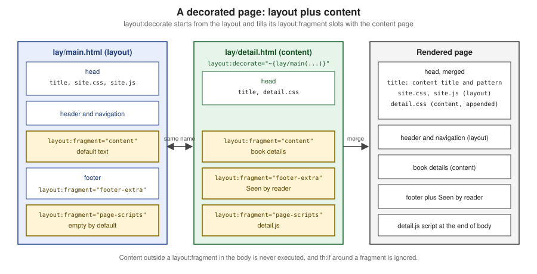

Layouts & the Layout Dialect
|
This content was generated with the assistance of AI and should be verified against the official documentation before being relied on in production. |
This page is written against Thymeleaf 3.1.5.RELEASE (2026-04-21), Thymeleaf Layout Dialect 4.0.1 (2026-03-25, Java 17 and Thymeleaf 3.1 minimum),
Spring Boot 4.1.1 (Spring Framework 7.0.9) and Java 21, checked on 2026-10-08, and every example was compiled and run on that stack in a scratch Bookshelf
application (Maven wrapper, JDK 26 with --release 21, MockMvc, and a standalone TemplateEngine for the dialect options). The native approaches apply to Thymeleaf
standalone, with Spring MVC and with Spring WebFlux; the Layout Dialect is a separate community library that works with the same three, and Spring Boot
auto-configures it for web applications. The running scenario is the Bookshelf from the
Getting Started page.
Every page of a site shares a skeleton: the <head> with the stylesheets and scripts, a header and navigation, a footer. A layout is how that skeleton is written
once. Thymeleaf offers two native ways to build it, both based on the fragments from Fragments, and a community dialect adds a third,
hierarchical one.
Include-style layouts
The simplest approach is include-style: every page owns its complete HTML skeleton and includes the shared parts (header, footer, <head> content) as fragments.
<!DOCTYPE html>
<html xmlns:th="http://www.thymeleaf.org">
<head th:replace="~{fragments/head :: head('Dune')}"></head>
<body>
<header th:replace="~{fragments/header :: header}"></header>
<main>
<h1 th:text="${book.title}">Dune</h1>
</main>
<footer th:replace="~{fragments/footer :: footer}"></footer>
</body>
</html>It is easy to understand and every page is a complete, natural template, but the order of the pieces (header, then main, then footer) is repeated in every page, so a change to the skeleton touches all the pages.
The native parameterised layout
The reverse is to write the skeleton once, as a fragment with parameters, and let each page call it, passing its own pieces as markup. The tutorial introduces this as
the way to go beyond mere fragment insertion, and the "Layouts" article on thymeleaf.org describes the same idea. The layout is a fragment that receives the
page’s <title> and main content as parameters:
<!DOCTYPE html>
<html xmlns:th="http://www.thymeleaf.org" th:fragment="layout(title, content)">
<head>
<title th:replace="${title}">Bookshelf</title>
<link rel="stylesheet" th:href="@{/css/site.css}" href="/css/site.css">
</head>
<body>
<nav><a th:href="@{/books}" href="/books">Books</a></nav>
<main th:replace="${content}">Page content goes here</main>
<footer>© 2026 Bookshelf</footer>
</body>
</html>A page replaces its own <html> with the layout, selecting its <title> and <section> with ~{::title} and ~{::section}:
<!DOCTYPE html>
<html xmlns:th="http://www.thymeleaf.org"
th:replace="~{nat/layout :: layout(~{::title}, ~{::section})}">
<head>
<title>Dune - Bookshelf</title>
</head>
<body>
<section>
<h1 th:text="${book}">Dune</h1>
</section>
</body>
</html>Rendered:
<!DOCTYPE html>
<html>
<head>
<title>Dune - Bookshelf</title>
<link rel="stylesheet" href="/css/site.css">
</head>
<body>
<nav><a href="/books">Books</a></nav>
<section>
<h1>Dune</h1>
</section>
<footer>© 2026 Bookshelf</footer>
</body>
</html>Everything is plain Thymeleaf. Each extra slot is another parameter, and a slot a page does not fill can take the no-op token _ (keeping the layout’s default) or the
empty fragment ~{} (removing it), as described on the fragments page. The costs are that a page must pass every slot it fills in the call, that the layout’s <head> merging is
manual (the page passes ~{::link} for its extra links), and that the parameter list grows with the layout.
The Thymeleaf Layout Dialect
The Thymeleaf Layout Dialect (nz.net.ultraq.thymeleaf:thymeleaf-layout-dialect) is a community dialect. It introduces the layout namespace and
five attribute processors (layout:decorate, layout:title-pattern, layout:insert, layout:replace, layout:fragment), and it works as a hierarchical layout:
a content page says which layout it decorates, and the layout "pulls" the named parts out of the content page. The layout acts as a default; the content page
overrides what it wants. The dialect is not a part of Thymeleaf itself; it works with the same template resolvers and the same Standard dialect expressions.
Installation and auto-configuration
Version 4.0.1 requires Java 17 and Thymeleaf 3.1. With Spring Boot nothing needs to be configured: the Spring Boot BOM manages the version (so the dependency has no
<version>), and the auto-configuration registers a LayoutDialect bean when the library is on the classpath (the nested
ThymeleafWebLayoutConfiguration of ThymeleafAutoConfiguration, which backs off when you define your own LayoutDialect bean).
<dependency>
<groupId>nz.net.ultraq.thymeleaf</groupId>
<artifactId>thymeleaf-layout-dialect</artifactId>
</dependency>Without Spring Boot (or outside Spring), add the dialect to your engine yourself, and with Spring without Boot declare a LayoutDialect bean:
TemplateEngine templateEngine = new TemplateEngine();
templateEngine.addDialect(new LayoutDialect());Source: Layout Dialect — Getting started
layout:decorate and layout:fragment
The Bookshelf layout is a template with layout:fragment slots. Parts without a slot (the <head> essentials, the navigation) belong to the layout alone.
<!DOCTYPE html>
<html xmlns:th="http://www.thymeleaf.org" xmlns:layout="http://www.ultraq.net.nz/thymeleaf/layout">
<head>
<meta charset="UTF-8">
<title layout:title-pattern="$CONTENT_TITLE - $LAYOUT_TITLE">Bookshelf</title>
<link rel="stylesheet" th:href="@{/css/site.css}" href="/css/site.css">
<script th:src="@{/js/site.js}" src="/js/site.js" defer></script>
</head>
<body th:class="${pageClass}">
<header>
<nav><a th:href="@{/books}" href="/books">Books</a></nav>
</header>
<main layout:fragment="content">
<p>Page content goes here</p>
</main>
<footer>
<p>© 2026 Bookshelf</p>
<p layout:fragment="footer-extra"></p>
</footer>
<th:block layout:fragment="page-scripts"></th:block>
</body>
</html>This template is saved as templates/lay/main.html. A content page declares the layout in its root element and defines fragments with the same names:
<!DOCTYPE html>
<html xmlns:th="http://www.thymeleaf.org" xmlns:layout="http://www.ultraq.net.nz/thymeleaf/layout"
layout:decorate="~{lay/main(pageClass='detail')}">
<head>
<title th:text="${book}">Dune</title>
<link rel="stylesheet" th:href="@{/css/detail.css}" href="/css/detail.css">
</head>
<body>
<main layout:fragment="content">
<h1 th:text="${book}">Dune</h1>
</main>
<p layout:fragment="footer-extra">Seen by <span th:text="${user}">reader</span></p>
<th:block layout:fragment="page-scripts">
<script th:src="@{/js/detail.js}" src="/js/detail.js"></script>
</th:block>
</body>
</html>Rendered (blank lines left by the merge removed from the middle for brevity, the rest is the real output):
<!DOCTYPE html>
<html>
<head>
<meta charset="UTF-8">
<title>Dune - Bookshelf</title>
<link rel="stylesheet" href="/css/site.css">
<script src="/js/site.js" defer></script>
<link rel="stylesheet" href="/css/detail.css">
</head>
<body class="detail">
<header>
<nav><a href="/books">Books</a></nav>
</header>
<main>
<h1>Dune</h1>
</main>
<footer>
<p>© 2026 Bookshelf</p>
<p>Seen by <span>reader</span></p>
</footer>
<script src="/js/detail.js"></script>
</body>
</html>
Source: Layout Dialect — layout:decorate
How the decoration works, and what follows from it:
-
layout:decorategoes in the root element of the content page (usually<html>) and takes a fragment expression that names the layout. -
Processing is redirected from the content page to the layout. The layout is rendered, and each
layout:fragmentin it is replaced by the fragment of the same name from the content page if the content page defines it; otherwise the layout’s default content stays. A layout fragment such asfooter-extrathat the content page leaves out simply keeps its default. -
Anything in the content page’s
<body>outside alayout:fragmentis never executed. Because the layout asks for fragments by name, it also ignores any condition that wraps a fragment. Ath:ifaroundlayout:fragment="content"is not evaluated: in the run, a page with<div th:if="${admin}">around the fragment showed it withadminfalse. Put the condition inside the fragment. -
Fragment names must be unique within a template, otherwise fragments get mismatched.
-
The content page can be tiny. A single element can be both root and fragment:
<p layout:decorate="~{lay/main}" layout:fragment="footer-extra">Minimal page</p>renders the whole layout with only the footer text replaced. -
Other attributes in the element with
layout:decorate(for example aclass) are copied to the root element of the layout. That behaviour is historic and has tripped people up. -
The
<body>of the layout can still be dynamic (th:class="${pageClass}"above), which leads to the next topic.
Passing data to the layout
Since the layout is located with a standard fragment expression, named parameters can pass data from the content page to the layout. The call
layout:decorate="~{lay/main(pageClass='detail')}" made ${pageClass} available inside the layout, which is how <body class="detail"> appeared above. Parameters must be
named: a positional call (~{lay/main('detail')}) raised IllegalArgumentException: Fragment parameters must be named when used with layout:decorate/data-layout-decorate.
Title patterns
By default the content page’s <title> replaces the layout’s. layout:title-pattern combines them. In the layout it sets the pattern for every page:
<title layout:title-pattern="$CONTENT_TITLE - $LAYOUT_TITLE">Bookshelf</title>$LAYOUT_TITLE is the title of the layout and $CONTENT_TITLE the title of the content page, so the page with title Dune above is rendered as Dune - Bookshelf. The attribute
works for static titles and for th:text/th:utext titles, and a pattern in a content page overrides the one in the layout. The previous $DECORATOR_TITLE token was removed in version 3.0.
Version 3.4.0 added an experimental alternative with standard expressions, enabled by withExperimentalTitleTokens(true): layout:title="|${layoutDialectContentTitle} / ${layoutDialectLayoutTitle}|"
(the two variables are also available elsewhere in the template). In the run, a content page with the title Dune and a layout titled Bookshelf produced Dune / Bookshelf. It is documented as experimental,
so prefer the tokens.
Head merging and sorting strategies
The <head> elements of the layout and the content page are merged: the content page’s <title> takes the layout’s place and every other element of the content <head> is
added to the layout’s. How the elements are ordered is configurable through a SortingStrategy. Given these two heads (run with a layout titled Goodbye! and a content page titled Hello!):
<!-- layout -->
<head>
<meta charset="UTF-8">
<title>Goodbye!</title>
<link rel="stylesheet" href="layout-stylesheet.css"/>
<script src="layout-script.js"></script>
</head>
<!-- content -->
<head>
<title>Hello!</title>
<link rel="stylesheet" href="content-stylesheet.css"/>
<script src="content-script.js"></script>
</head>the AppendingStrategy (the default) puts the content’s elements after the layout’s, and the GroupingStrategy groups similar elements, stylesheets with stylesheets and scripts with scripts:
| AppendingStrategy (default) | GroupingStrategy |
|---|---|
|
|
Both strategies respect the position of the layout’s <title> (since 3.0), and in the run the layout’s <meta charset> stayed first. You can implement your own SortingStrategy, and a third option
is to turn merging off. With withAutoHeadMerging(false) the head is whatever the content page has, and the layout’s head is not applied:
<head>
<title>Hello!</title>
<link rel="stylesheet" href="content-stylesheet.css"/>
<script src="content-script.js"></script>
</head>Configuration options
The options are set with a fluent API. They are the only configuration the dialect has:
| Option | Default | Effect |
|---|---|---|
|
|
How head elements are sorted when merged |
|
|
|
|
|
Standard-expression title patterns (since 3.4.0) |
Because Spring Boot backs off when it finds a LayoutDialect bean, you override the configuration by declaring your own. In the run, the grouping strategy on a custom bean reordered the
Bookshelf head so that both stylesheets came before the script, and only one LayoutDialect bean existed.
@Configuration
class LayoutConfig {
@Bean
LayoutDialect layoutDialect() {
return new LayoutDialect()
.withSortingStrategy(new GroupingStrategy())
.withAutoHeadMerging(true);
}
}layout:insert and layout:replace
layout:insert and layout:replace resemble th:insert and th:replace, but they can pass whole template fragments to the target. They are the dialect’s component tool: the callee leaves
named layout:fragment slots, and the caller fills them with markup written in the caller’s own context.
<section class="modal" layout:fragment="modal(title)">
<header th:text="${title}">Title goes here</header>
<div class="modal-body">
<div layout:fragment="modal-content">Content goes here</div>
</div>
</section><div layout:insert="~{lay/modal :: modal(title='Greetings')}">
<p layout:fragment="modal-content">Hi there!</p>
</div>
<div layout:replace="~{lay/modal :: modal(title='Greetings')}">
<p layout:fragment="modal-content">Hi there!</p>
</div>Rendered: the first form keeps the host <div> around the modal (like th:insert) and the second removes it (like th:replace):
<div><section class="modal">
<header>Greetings</header>
<div class="modal-body">
<p>Hi there!</p>
</div>
</section></div>
<section class="modal">
<header>Greetings</header>
<div class="modal-body">
<p>Hi there!</p>
</div>
</section>Multi-level layouts
A layout can itself decorate another layout, which gives a hierarchy: a lay/section page decorates lay/main and exposes a new slot section-content, and a page decorates lay/section. In the run the
deepest page (Dune, in the section-content slot) ended up inside the catalogue’s <main> below its menu, inside the site header and footer. Use this sparingly; every extra level makes the final markup
harder to predict.
<!-- lay/section.html -->
<html layout:decorate="~{lay/main}">
<head><title>Catalogue</title></head>
<body>
<main layout:fragment="content">
<nav>Catalogue menu</nav>
<div layout:fragment="section-content">Section default</div>
</main>
</body>
</html>
<!-- lay/deep.html -->
<html layout:decorate="~{lay/section}">
<head><title>Dune</title></head>
<body><div layout:fragment="section-content"><h1>Dune</h1></div></body>
</html>Source: Layout Dialect — decorate
Page-specific scripts and styles
Two patterns cover the extras a single page needs. Extra <link> and <script> elements in the content page’s <head> are merged by the head strategy (the first example shows detail.css appended).
Scripts that must come last in the body go in a dedicated slot such as <th:block layout:fragment="page-scripts"></th:block>, which is empty by default and which pages fill; this is also where page-specific
inline JavaScript with Thymeleaf’s JavaScript inlining belongs (see Inlining and Textual Template Modes).
Comparison
| Include-style | Native parameterised layout | Layout Dialect | |
|---|---|---|---|
Skeleton written |
In every page |
Once, as a fragment |
Once, as the layout |
Page declares |
Its full HTML and the includes |
The call with each slot as an argument |
Only the fragments it overrides |
Page stays a natural template |
Yes |
Yes, its own |
Yes |
Defaults for unfilled slots |
Not applicable |
The no-op token |
The layout’s own content |
Head merging |
Manual |
Manual (pass |
Built in, with sorting strategies |
Title composition |
Manual |
Manual |
|
Conditions around a slot |
Evaluated |
Evaluated |
Ignored (conditions around |
Dependency |
None |
None |
|
Maintenance |
Part of Thymeleaf |
Part of Thymeleaf |
Community project, 4.0.1 of 2026-03-25 |
The Layout Dialect gives the most compact pages and the best head handling; the native approach has no extra dependency and no hidden execution model, and the fragment rendering used for htmx and Ajax responses is built on plain fragments. They can coexist in one project. Choosing the native approach also avoids the dialect’s rule that content outside fragments is not executed.
Migrating to Layout Dialect 3.0 and 4.0
Many guides were written for 2.x. The book Taming Thymeleaf (the consulted PDF is v1.1.1 of 2021) used Layout Dialect 2.4 with Thymeleaf 3.0, so its layout chapter predates all of this. The changes since:
| Version | Change |
|---|---|
3.0 |
The deprecated |
4.0 |
Aligned with Spring Boot 4: built for Java 17, Groovy 5 and Gradle 9. The |
Thymeleaf itself also changed: Thymeleaf 3.1 deprecated th:include and the unwrapped fragment syntax, and removed th:substituteby. The archived 3.1 article lists them: see
Fragments and the references below.
Pitfalls
| Symptom | Cause | Fix |
|---|---|---|
A page using |
|
Use |
The |
The layout asks for the fragment by name, and the content page’s body outside fragments is never executed |
Put the condition inside the fragment, or in the layout |
|
A positional parameter was passed to the layout |
Name the parameters: |
The wrong block is replaced or a block appears twice |
Two |
Keep fragment names unique within a template |
The page title is only the content title |
No |
Add the pattern, usually in the layout |
Scripts run in a different order from expectations |
The default |
Use |
The root element’s |
Attributes alongside |
Do not put attributes there that should stay on the page |